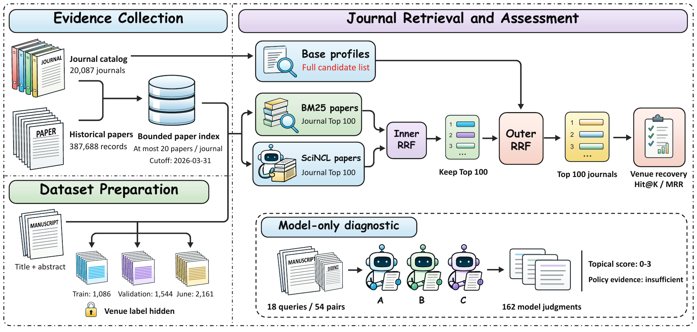
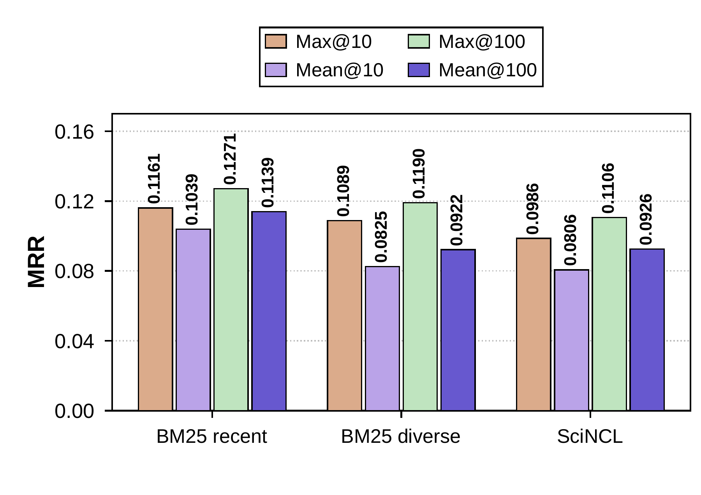
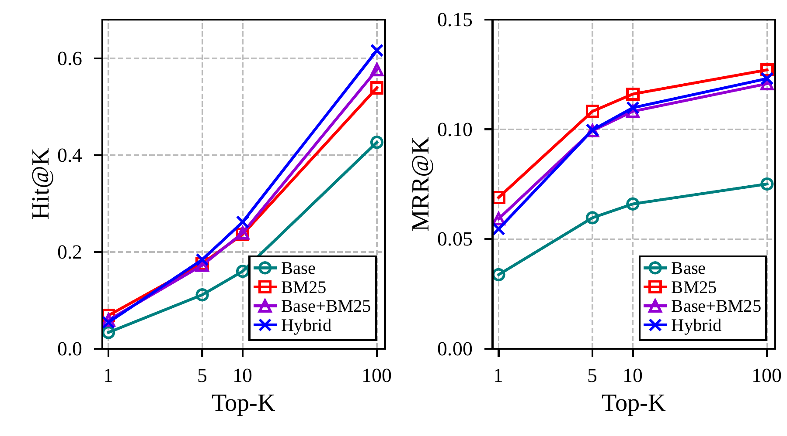
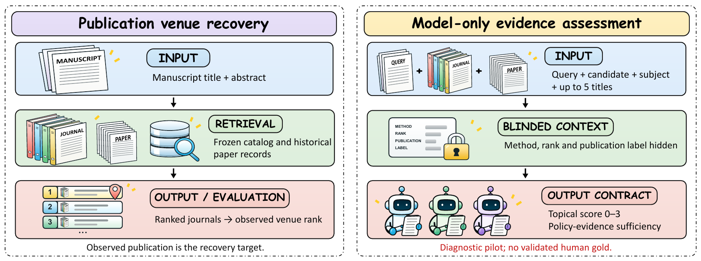
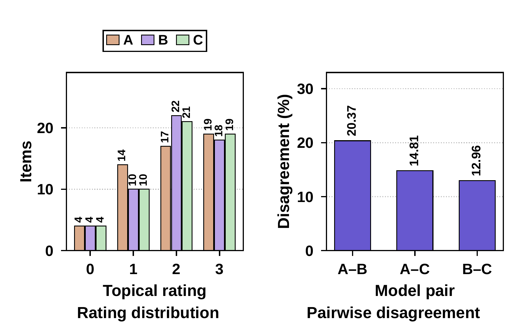
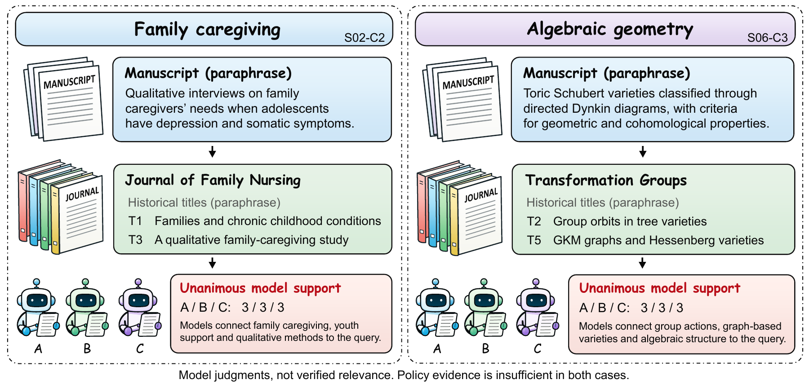
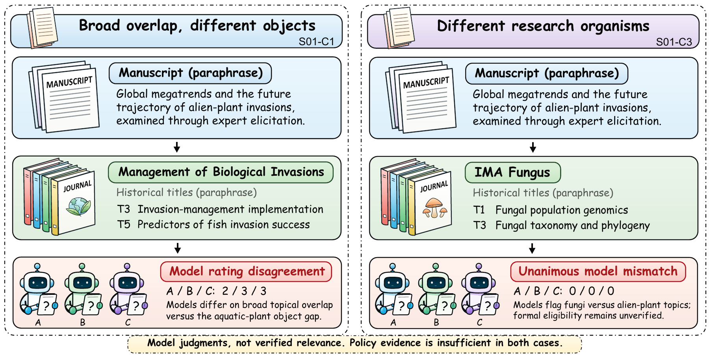
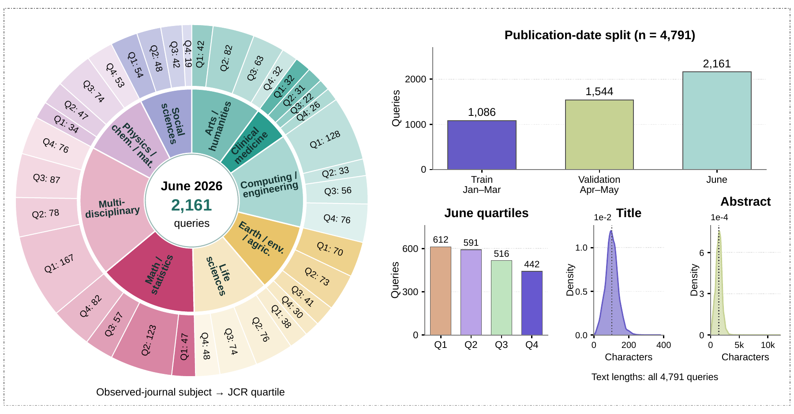

01 · 固定证据
20,087 个候选期刊，387,688 篇历史论文；记录日期截止 2026-03-31，每刊最多保留 20 篇。

论文 · 离线检索研究Base + hybrid · 2026 年 6 月开发集（已在开发中使用）
| # | 等级 | 链接 | |||||
|---|---|---|---|---|---|---|---|
点击列表头可排序，小屏幕可左右滑动表格。源数据缺失字段记为 —；ISSN 包含电子版编号。等级以收录榜单版本为准。
Where Papers Go: A Benchmark Study of Paper-Evidence Journal Retrieval
2,161 条已在开发中使用的六月查询。Hit 指标衡量原发表期刊找回率，MRR 为原始值；— 表示未报告。
| 方法 | Hit@1 (%) | Hit@5 (%) | Hit@10 (%) | MRR@10 | 候选召回 (%) | 平均候选数 |
|---|---|---|---|---|---|---|
| Base | 3.38 | 11.15 | 16.01 | 0.0660 | 51.09 | 206.82 |
| BM25（近期） | 6.89 | 17.63 | 23.65 | 0.1161 | — | — |
| BM25（多样化） | 6.80 | 15.96 | 22.77 | 0.1089 | — | — |
| SciNCL | 5.83 | 15.22 | 21.15 | 0.0986 | — | — |
| Base + BM25 | 5.92 | 17.26 | 23.92 | 0.1082 | 71.36 | 281.68 |
| Base + 多样化 BM25 | 6.25 | 17.35 | 23.60 | 0.1097 | 69.18 | 283.07 |
| Base + SciNCL | 5.23 | 16.43 | 23.97 | 0.1003 | 70.48 | 276.97 |
| Base + hybrid | 5.46 | 18.42 | 26.19 | 0.1098 | 72.98 | 277.37 |
| Catalog CE | 2.59 | 10.00 | 18.37 | 0.0610 | — | — |
| Catalog + papers CE | 3.47 | 13.47 | 22.21 | 0.0787 | — | — |
Base + hybrid 的 Hit@10 为 26.19%，比 Base + BM25 高 2.27 个百分点（95% 配对区间 [1.20, 3.29]；Holm p = 0.0064，32 项检验）。
近期 BM25 的 Hit@1（6.89%）和 MRR@10（0.1161）更高。两种交叉编码器重排均低于其 Base + BM25 输入；最终混合方法尚无独立未来期验证。


| 较早方法 | Hit@10 (%) | Hit@50 (%) | MRR@10 | nDCG@10 |
|---|---|---|---|---|
| 图 / 向量混合 | 14.67 | 28.67 | 0.0618 | 0.0815 |
| 学习排序器 | 4.67 | 15.33 | 0.0209 | 0.0271 |
| 固定线性 | 17.00 | 33.67 | 0.0656 | 0.0899 |
| 固定 RRF | 17.00 | 33.67 | 0.0703 | 0.0934 |
这是较早的四个系统，未评测最终论文混合方法。标签首次访问后修复了期刊身份映射，不能视作未经触碰的单次封存测试。

3 个同家族模型分别在新上下文中评分。这里衡量一致性，没有人工验证；输入未提供官方政策文本，因此 162 条政策证据判断全部为不足。

| 组合 | n | 完全一致 (%) | 相差 ≤ 1 级 (%) | κw |
|---|---|---|---|---|
| A–B | 54 | 79.63 | 100.00 | 0.882 |
| A–C | 54 | 85.19 | 100.00 | 0.915 |
| B–C | 54 | 87.04 | 100.00 | 0.921 |
按冻结标注条件与条目编号选取的说明性案例。展示模型判断与所给历史证据，未作人工适配性验证。


图 1–8 与表 1–4 来自当前论文稿。此页展示离线研究结果；在线演示使用浏览器本地 BM25、TF-IDF 与关键词图。
实验口径与图表来源 ↗20,087 个候选期刊，387,688 篇历史论文；记录日期截止 2026-03-31，每刊最多保留 20 篇。
BM25 与 SciNCL 分别检索论文，以每刊最高论文得分聚合；每路保留前 100 个期刊。
先融合两路论文排名并截取前 100，再与完整 Base 期刊画像排序融合。两层均用等权 RRF。
RRF(v) = Σ 1 / (60 + rank_j(v))Base 为固定的期刊画像参照；论文混合方法固定外层论文通道预算，但增加了稠密检索计算。
查看实验对比 →独立的 Web Worker 加载公开目录，为刊会名称、研究分类与已审核范围关键词建立索引，不阻塞页面交互。
按等级、会议或期刊、研究分类及审核状态筛选。多个等级之间取并集，不同筛选项之间取交集。
BM25 召回匹配词项；TF-IDF 余弦相似度比较词项向量；审核关键词共现图扩展相关主题，并辅助识别常见研究概念的别名。
展示匹配词项、信号贡献、已审核收稿范围与明确排除的方向，通过来源链接进一步核对原始依据。
| 能力 | 浏览器版 | Python 应用 |
|---|---|---|
| 等级筛选与审核范围 | 支持 | 支持 |
| 主题检索 | BM25 + TF-IDF + 关键词图 | LightRAG + 神经语义向量 |
| 匹配解释 | 匹配词项与本地依据 | LLM 重排与解释 |
| 实时核验 | 不支持，使用已发布快照 | Search API |
| 计算与隐私 | 用户设备计算；不上传查询 | 服务器与配置的 API 服务 |
TF-IDF 是词项向量，不是神经语义嵌入。浏览器版分数表示相对主题匹配，不代表录用概率或经实验验证的研究增益。

| 资源 | 数量 | 用途 |
|---|---|---|
| 训练查询 | 1,086 | 2026 年 1–3 月 |
| 验证查询 | 1,544 | 2026 年 4–5 月 |
| 六月开发查询 | 2,161 | 主要比较；已在开发中使用 |
| 较早的七月查询 | 300 | 较早系统；身份映射经修复 |
| 候选期刊 | 20,087 | 固定候选全集 |
| 历史论文 | 387,688 | 每刊至多 20 篇 |
| 有论文证据的期刊 | 19,593 | 97.54% 的候选期刊 |
| 试验查询 / 稿件–期刊对 | 18 / 54 | 仅模型参与 |
| 模型 / 人工判断 | 162 / 0 | 描述性分析 |
论文实验使用固定期刊全集；本网站目录还包含会议及多套榜单，采用各自的统计口径。历史证据以 2026-03-31 为记录日期上限。
| 评价体系 | 版本 | 原始记录 | 等级 |
|---|---|---|---|
| 正在加载目录… | |||
各榜单记录可能重复。活动刊会数按实体去重，并排除已合并或不可独立投稿的历史目标。等级反映收录版本，不是实时更新结果。
只有人工审核目录中状态为 approved 的记录才显示为已审核范围。自动抓取但尚未审核的范围不会被发布。未覆盖审核范围的刊会仍可按原始名称、等级与学科分类检索。
审核范围保留来源链接，并可能包含覆盖主题、排除方向、文章类型与投稿形式。来源可能对应历史年份；投稿前请自行核实最新征稿、日期与规则。
页面从 GitHub Pages 下载静态文件与公开目录。查询、筛选、排序和导出都在你的设备上完成；站点不包含统计追踪、查询 API 或外部模型下载。
浏览器仅可保存语言与主题偏好，不保存摘要和检索历史。打开证据链接时，将访问相应的第三方网站。